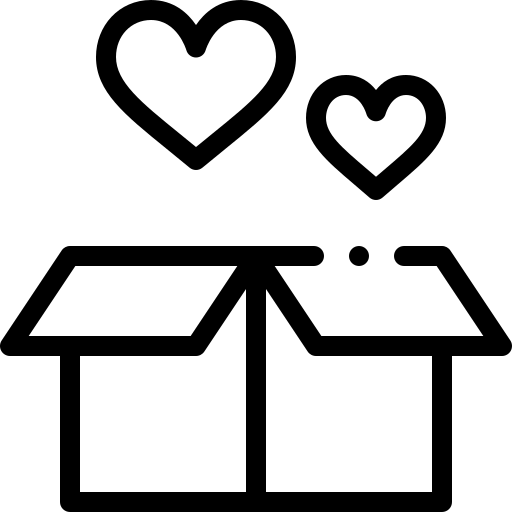
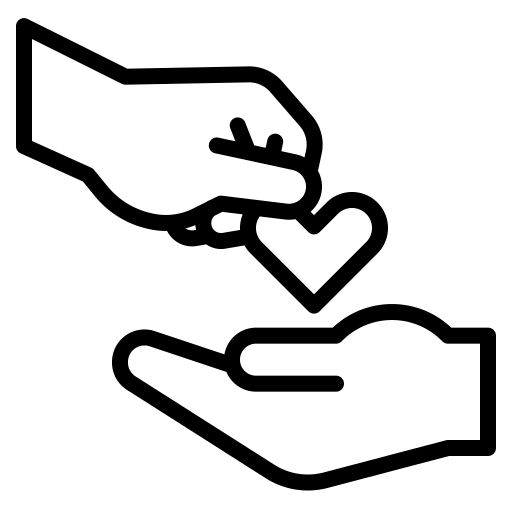

Sobre Lali Tejidos

Nuestros objetivos
En tejidos Lali amamos lo que hacemos y queremos compartirlo con ustedes
Materia prima
Utilizamos las mejores lanas de producción e industria nacional e importadas

Dónde encontrarnos
Actualmente nos encontramos en la zona oeste: Morón, Castelar, Haedo. Consultanos.

Por qué elegirnos
Somos una empresa familiar extremadamente puntual y brindamos un servicio personalizado atentiendo todas tus necesidades